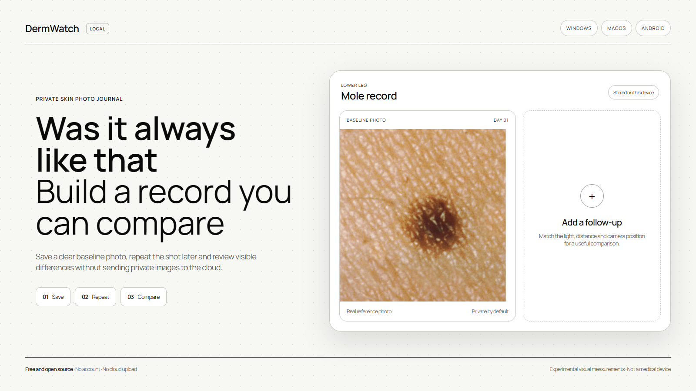

WINDOWS + MACOS + ANDROID / MIT LICENSE
Three
platforms
One local record
Windows, macOS and Android. Keep the photo history on your device and inspect the source on GitHub.
github.com/amirmushichge/dermwatchDOWNLOAD. RUN LOCALLY. BUILD A REPEATABLE RECORD_